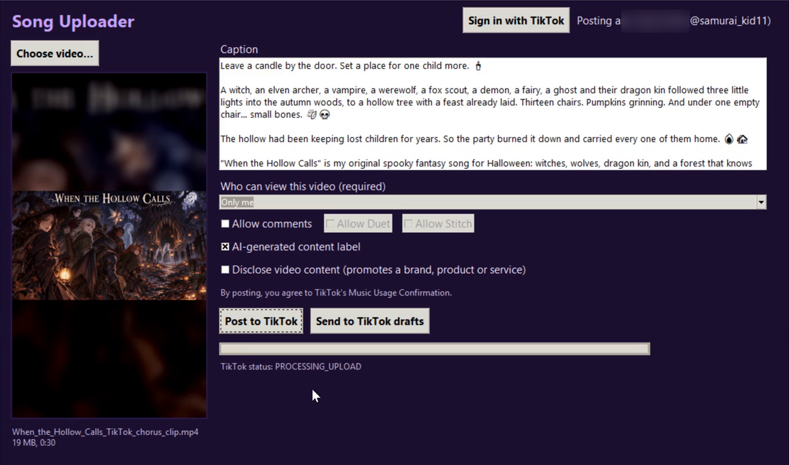

Post your music videos to TikTok, straight from your desktop.
Song Uploader is a small Windows app for an independent musician. It takes a finished music video from the computer, fills in its caption, and posts it to TikTok through TikTok's official Content Posting API, so you don't have to move large video files to your phone first.
See how it works Privacy PolicyWhat it is
Song Uploader was built by the independent artist behind the YouTube channel @Samuraikid11 and the TikTok account @samurai_kid11. They write original fantasy and story songs and make a music video for each one. Every song gets a full-length 9:16 version and a short chorus clip for TikTok, and each comes with a long caption and hashtags.
The TikTok mobile app limits hashtags, and moving large 4K-sourced videos to a phone is slow. Song Uploader posts straight from the PC where the videos are made, using the creator's own TikTok login.
It is a personal tool: it only posts the owner's own original videos to the owner's own TikTok account. It is not sold or offered to other users.
Features
Everything the app does is in one window.
Sign in with TikTok
Uses TikTok Login Kit (OAuth with PKCE). The app never sees or stores your TikTok password.
Pick a video
Choose an MP4 or MOV from your computer. The app shows a preview frame, the file size and the length before you post.
Caption auto-fill
If a caption text file sits next to the video, the caption box fills in by itself. You can still edit it before posting.
You choose who can see it
Privacy options come from your own TikTok account settings. Nothing is selected for you, and you have to choose one before you can post.
Interaction & disclosure settings
Turn comments, Duet and Stitch on or off, add TikTok's AI-generated content label, and mark branded or promotional content.
Live upload status
A progress bar and TikTok's own status messages (uploading, processing, published) tell you when the post is live.
The app
Song Uploader posting a chorus clip for the song "When the Hollow Calls".

How it works
From finished video to TikTok post in a few clicks.
- Sign in. Click Sign in with TikTok. Your browser opens TikTok's own authorization page, where you approve the app. The window then shows the account it will post as.
- Choose a video. Pick the music video file. The preview, file size and length appear on the left.
- Check the caption. The caption is filled in from the video's caption file. Edit it if you want.
- Pick who can view it. Choose a privacy option from the list your TikTok account allows, and set comments, Duet, Stitch and the content labels.
- Post. Click Post to TikTok. The app uploads the file to TikTok and shows its status until the post is published. TikTok may take a few minutes to process the video.
TikTok permissions it uses
The app only asks for what it needs to post, and nothing else.
| Scope | Why it's needed |
|---|---|
user.info.basic | Shows the display name and avatar of the signed-in account, so you can see which account you are posting to. |
video.upload | Uploads the video file you selected to your TikTok account. |
video.publish | Publishes the uploaded video with the caption and the privacy and interaction settings you chose. |
Song Uploader does not read your followers, messages, other people's content or analytics. Sign-in tokens are kept only on your own computer. See the Privacy Policy for details.
FAQ
Who can use Song Uploader?
Only its creator. It posts the creator's own original music videos to their own TikTok account. It isn't downloadable or sold.
Does it post anything automatically?
No. Every post starts with the user picking a video and clicking Post to TikTok. Nothing is posted on a schedule or in the background.
Where is my data stored?
Only on your own computer. The app has no server of its own. Videos go straight from your computer to TikTok.
How do I disconnect it from TikTok?
In the TikTok app, go to Settings and privacy → Security → Manage app permissions and remove Song Uploader. You can also delete the app's local token file.
What kind of videos does it post?
Original music videos for songs by Samuraikid11: full-length 9:16 versions and short chorus clips. Posts are labelled as AI-generated content where that applies.